정보처리기사 실기 1-2장
사용자와 다른 외부 시스템들이 개발될 시스템을 이용해 수행할 수 있는 기능을 사용자의 관점에서 표현한 것
구성요소
| 구성요소 |
표현방법 |
내용 |
| 시스템(System),
시스템 범위(System Scope)
|
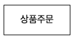 |
시스탬 내부의 유스케이스들을 사각형으로 묶어 시스템의 범위를 표현한 것 |
| 액터(Actor) |
|
- 시스템과 상호작용을 하는 모든 외부요소
- 주로 사람이나 외부 시스템을 의미함
- 주액터 : 시스템을 사용함으로서 이득을 얻는 대상르로, 주로 사람이 해당
- 부액터 : 주액터의 목적 달성을 위해 시스템에서 서비스를 제공하는 외부 시스템. 조직이나 기관 등이 될 수 있음.
|
| 유스케이스(Use Case) |
|
사용자가 보는 관점에서 시스템이 액터에게 제공하는 서비스나 기능을 표현한 것 |
| 관계(Relationship) |
|
- 유스케이스 다이어그램에서 관계는 액터와 유스케이스와 유스케이스 사이에서 나타날 수 있음
- 유스케이스에서 나타날 수 있느 관계 : 포함(Include)관계, 확장(Extends)관계, 일반화(Generalization)관계
|
유스케이스 다이어그램 예제
- 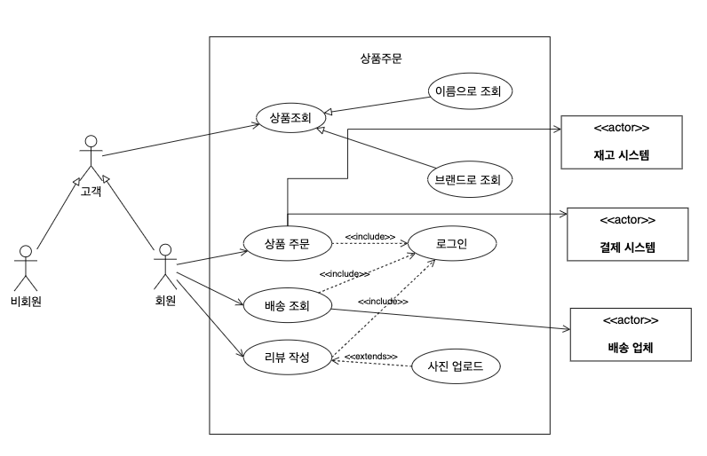
유스케이스에서 나타날 수 있는 관계
| 포함(Include) 관계 |
두 개 이상의 유스케이스에 공통적으로 적용되는 기능을 별도로 분리하여 새로운 유스케이스로 만든 경우.
원래 유스케이스와 새롭게 분리된 유스케이스와의 관계
|
| 확장(Extends) 관계 |
유스케이스가 특정조건에 부합되어 유스케이스의 기능이 확장될 떄 원래의 유스케이스와 확장된 유스케이스의 관계 |
활동 다이어그램 (Activity Diagram)
사용자 관점에서 시스템이 수행하는 기능을 처리흐름에 따라 순서대로 표현한 것
구성요소
| 구성요소 |
표현방법 |
내용 |
| 액션(Action), 액티비티(Activity) |
- 액션

- 액티비티
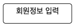
|
- 액션 : 더이상 분해할 수 없는 단일작업
- 액티비티 : 몇개의 액션으로 분리될 수 있는 작업
|
| 시작 노드 |
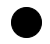 |
액션이나 액티비티가 시작됨을 표현한 것 |
| 종료 노드 |
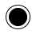 |
액티비티 안의 모든 흐름이 종료됨을 표현한 것 |
| 조간(판단) 노드 |
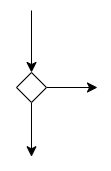 |
- 조건에 따라 제어의 흐름이 분리됨을 표현한 것
- 들어오는 제어흐름은 한개 나가는 제어흐름은 여러개
|
| 병합 노드 |
 |
- 여러 경로의 흐름이 하나로 합쳐짐을 표현한 것
- 들어오는 제어 흐름은 여러 개 나가는 제어흐름은 한개
|
| 포크(Fork) 노드 |
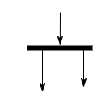 |
- 액티비티의 흐름이 분리되어 수행됨을 표현한 것
- 들어오는 액티비티의 흐름은 한개 나가는 액티비티의 흐름은 여러개
|
| 조인(Join) 노드 |
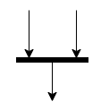 |
- 분리되어 수행되던 액티비티의 흐름이 다시 합쳐짐을 표현한 것
- 들어오는 액티비티의 흐름은 여러개 나가는 액티비티의 흐름은 한개
|
| 스윔레인(Swim Lane) |
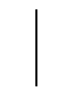 |
- 액티비티 수행을 담당하는 주체를 구분하는 선
- 가로 또는 새로 실선을 그어 구분함
|
활동 다이어그램 예제

클래스 다이어그램 (Class Diagram)
클래스와 클래스가 가지는 속성, 클래스 사이의 관계를 표현한 것
구성요소
| 구성 요소 |
표현 방법 |
내용 |
| 클래스 (Class) |
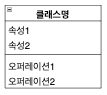 |
- 각각의 객체들이 갖는 속성과 오퍼레이션(동작)을 표현한것
- 일반적으로 3개의 구획(Compartment)으로 나눠 클래스의 이름, 속성, 오퍼레이션을 표기함
- 속성(Attribute) : 클래스의 상태나 정보를 표현함
- 오퍼레이션(Operation) : 클래스가 수행할 수 있는 동작으로, 함수(메소드, Method)라고도 함
|
| 제약조건 |
|
- 속성에 입력될 값에 대한 제약조건이나 오퍼레이션 수행 전후에 지정해야 할 조건이 있다면 이를 적음
- 클래스 안에 제약조건을 기술할 떄는 중괄호 {}를 이용함
|
| 관계 (Relationship) |
|
- 관계는 클래스와 클래스 사이의 연관성을 표현함
- 클래스 다이어그램에 표현하는 관계에는 연관관계, 집합관계, 포함관계, 일반화 관계, 의존관계가 있음
|
클래스 다이어그램 예제
- 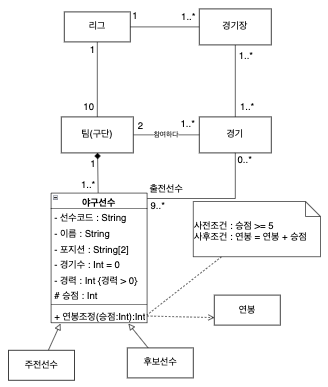
- 연관 관계에 있는 두 클래스에 추가적으로 표현해야 할 속성이나 오퍼레이션이 있는 경우 생성하는 클래스이다.
- 두 클래스의 연관 관계를 나타내는 선의 가운데로부터 점선을 연관클래스로 이어 표시한다.
- 연관 클래스의 이름은 연관 관계의 이름을 이용해 지정한다.
시스템이나 객체들이 메시지를 주고받으며 상호작용하는 과정을 그림으로 표현한 것
구성요소
| 구성 요소 |
표현 방법 |
의미 |
| 액터(Actor) |
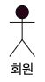 |
시스템으로부터 서비스를 요청하는 외부 요소로 사람이나 외부 시스템을 의미함 |
| 객체(Object) |
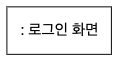 |
메시지를 주고 받는 주체 |
| 생명선(Lifeline) |
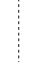 |
- 객체가 메모리에 존재하는 기간으로, 객체 아래쪽에 점선을 그어 표현함
- 객체 소멸(X)이 표시된 기간까지 존재함
|
| 실행상자(Active Box, 활성상자) |
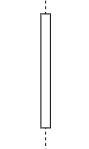 |
객체가 메시지를 주고 받으며 구동되고 있음을 표현함 |
| 메시지(Message) |
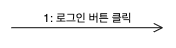 |
객체가 상호 작용을 위해 주고받는 메시지 |
| 객체 소멸 |
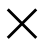 |
해당 객체가 더 이상 메모리에 존재하지 않음을 표현한 것 |
| 프레임(Frame) |
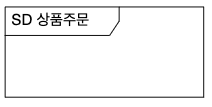 |
다이어그램의 전체 또는 일부를 묶어 표현한 것 |
시퀀스 다이어그램 예제
- 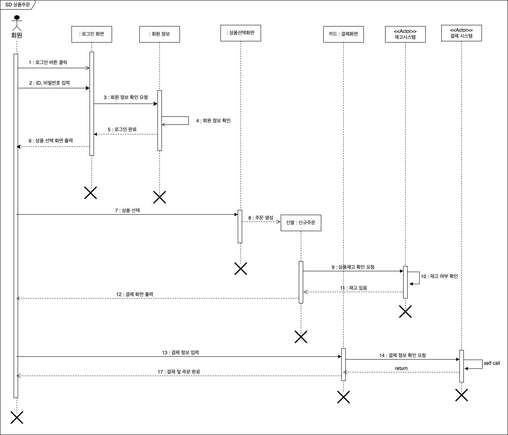
커뮤니케이션 다이어그램 (Communication Diagram)
시스템이나 객체들이 메시지를 주고받으며 상호작용하는 과정과 객체들 간의 연관을 그림으로 표현한 것
구성요소
| 구성요소 |
표현 방법 |
의미 |
| 액터(Actor) |
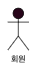 |
시스템으로부터 서비스를 요청하는 외부 요소로, 사람이나 외부 시스템을 의미함 |
| 객체(Object) |
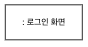 |
메시지를 주고받는 주체 |
| 링크(Link) |
|
- 객체들 간의 관계를 표현
- 엑터와 객체, 객체와 객체간에 실선을 그어 표현함
|
| 메시지(Message) |
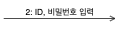 |
- 객체가 상호 작용을 위해 주고받는 내용
- 화살표의 방향은 메시지를 받는 쪽으로 향하게 표현함
- 일정한 순서에 의해 처리되는 메시지의 경우 숫자로 순서를 표현함
|
커뮤니케이션 다이어그램 예제
- 
객체들 사이에 발생하는 이벤트에 의한 객체들의 상태변화를 그림으로 표현한 것
구성 요소
| 구성 요소 |
표현 방법 |
의미 |
| 상태(State) |
 |
객케의 상태를 표현한 것 |
| 시작 상태 |
|
상태의 시작을 표현한 것 |
| 종료 상태 |
|
상태의 종료를 표현한 것 |
| 상태 전환 |
|
상태 사이의 흐름, 변화를 화살표로 표현한 것 |
| 이벤트(Event) |
|
- 상태에 변화르 주는 현상
- 이벤트에는 조건, 외부 신호, 시간의 흐름 등이 있음
|
| 프레임(Frame) |
|
상태 다이어그램의 범위를 표현한 것 |
상태 다이어그램 예제
- 
패키지 다이어그램 (Package Dirgram)
유스케이스나 클래스 등의 요소들을 그룹화한 패키지 간의 의존 관계를 표현한 것
구성 요소
| 구성 요소 |
표현 방법 |
의미 |
| 패키지(Package) |
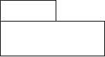 |
- 객체들을 그룹화한 것
- 단순 표기법 : 패키지 안에 패키지 이름만 표현
- 확장 표기법 : 패키지 안에 요소까지 표현
|
| 객체(Object) |
|
유스케이스, 클래스, 인터페이스, 테이블 등 패키지에 포함될 수 있는 다양한 요소들 |
| 의존관계(Dependency) |
|
- 패키지와 패키지, 패키지와 객체 간을 점선 화살표로 연결하여 표현함
- 스테레오 타입을 이용해 의존 관계를 구체적으로 표현할 수 있음
- 의존 관계의 표현 형태는 사용자가 임의로 작성할 수 있으며, 대표적으로 import 와 access가 사용됨
- «import» : 패키지에 포함된 객체들을 직접 가져와서 이용하는 관계
- «access» : 인터페이스를 통해 패키지 내의 객체에 접근하여 이용하는 관계
|
패키지 다이어그램 예제
- 
- 정형화된 분석 절차에 따라 사용자 요구사항을 파악하여 문서화하는 처리(Process) 중심의 방법론이다.
- 이해가 쉽고 검증이 가능한 프로그램 코드를 생성하는 것이 목적
구조적 방법론의 개발 절차
타당성 검토 단계→계획 단계→요구사항 단계→설계 단계→
구현 단계→시험 단계→운용/유지보수 단계
- 현실 세계의 개체(Entity)를 기계의 부품처럼 하나의 객체(Object)로 만들어 소프트웨어를 개발 할 때 기계의 부품을 조립하듯이
객체들을 조립해서 핋요한 소프트웨어 를 구현 하는 방법론이다.
- 구조적 기법의 문제점으로 인한 소프트웨어 위기의 해결책으로 체택되었다.
객체지향 방법론의 개발 절차
요구 분석 단계→설계 단계→구현 단계→테스트 및 검증 단계→인도 단계
컴포넌트 기반 방법론 (CBD : Component Based Design)
- 기존의 시스템이나 소프트웨어를 구성하는 컴포넌트를 조합하여 하나의 새로운 어플리케이션을 만드는 방법론이다.
- 컴포넌트의 재사용(Reusability)이 가능하여 시간과 노력을 절감할 수 있다.
컴포넌트 기반 방법론의 개발 절차
개발 준비 단계→분석 단계→설계 단계→구현 단계
→테스트 단계→전개 단계→인도 단계
- 이미 개발되어 인정받은 소프트웨어를 다른 소프트웨어 개발이나 유지에 사용하는 것
소프트웨어 재사용 방법
| 합성 중심 (Composition Based) |
전자 칩과 같은 소프트웨어 부품 즉 블록을 만들어서 끼워 맞춰 소프트웨어를 완성시키는 방법. 블록 구성 방법이라고도 함. |
| 생성 중심 (Generation Based) |
추상화 형태로 써진 명세서를 구체화하여 프로그램을 만드는 방법. 페턴 구성 방법이라고도 함. |
- 새로운 요구에 맞도록 기존 시스템을 이용하여 보다 나은 시스템을 구축하고, 새로운 기능을 추가하여
소프트웨어의 성능을 향상시키는 것
- 유지보수 비용이 소프트웨어 개발 비용의 대부분을 차지하기 때문에 유지보수의 생산성 향상을 통해 소프트웨어 위기를 해결하는 방법이다.
- 기존 소프트웨어의 데이터와 기능들의 개조 및 개선을 통해 유지보수성과 품질을 향상시킨다.
- 소프트웨어 개발 과정에서 사용되는 요구분석, 설계, 구현, 검사 및 디버깅 과정 전체 또는 일부를 컴퓨터와 전용 소프트웨어 도구를 사용하여
자동화 하는 것이다.
- CASE의 주요기능
- 소프트웨어 생명 주기 전 단계의 연결
- 다양한 소프트웨어 개발 모형 지원
- 그래픽 지원
하향식 비용 산정 기법
- 과거의 유사한 경험을 바탕으로 전문지식이 많은 개발자들이 참여한 회의룰 통해 비용을 산정하는 비과학적인 방법
| 전문가 감정 기법 |
조직 내에 있는 경험이 많은 두 명 이상의 전문가에게 비용 산정을 의뢰하는 기법 |
| 델파이 기법 |
전문가 감정 기법의 주관적인 편견을 보완하기 위해 많은 전문가의 의견을 종합하여 산정하는 기법 |
상향식 비용 산정 기법
- 세부적인 작업 단위별로 비용을 산정한 후 집계하여 전체비용을 산정하는 방법
- 주요 상향식 비용 산정 기법
- LOC(원시 코드 라인수) 기법
- 개발 단계별 인원수 기법
- 수학적 산정 기법
LOC (source Line Of Code, 원시 코드 라인수) 기법
- 소프트웨어 각 기능의 원시 코드 라인 수의 비관치, 낙관치, 기대치를 측정하여 예측치를 구하고 이를 이용하여 비용을 산정하는 기법
- 산정공식
- 노력(인월) = 개발기간 * 투입 인원 = LOC / 1인당 월 평균 생산 코드 라인 수
- 개발 비용 = 노력(인월) * 단위비용(1인당 월 평균 인건비)
- 개발 기간 = 노력(인월) / 투입 인원
- 생산성 = LOC / 노력(인월)
수학적 산정 기법
- 경험적 추정 모형, 실험적 추정 모형이라고도 한다.
- 개발 비용 산정의 자동화를 목표로 한다.
- 주요 수학적 산정기법
- COCOMO 모형
- Putnam 모형
- 기능 점수(FP : Function-Point) 모형
COCOMO 모형 (COnstructive COst MOdel)
- 원시 프로그램의 규모인 LOC(원시 코드 라인 수)에 의한 비용 산정 기법
- 개발할 소프트웨어의 규모(LOC)를 예측한 후 이를 소프트웨어 종류에 따라 다르게 책정되는 비용 산정 방정식에 대입하여 비용을 산정
- 비용 산정 결과는 프로젝트를 완성하는 데 필요한 노력(Man-Month)으로 나타난다.
- 보헴(Boehm)이 제안
COCOMO의 소프트웨어 개발 유형
- 조직형 (Organic Mode)
- 기관 내부에서 개발된 중∙소 규모의 소프트웨어이다.
- 일괄 자료 처리나 과학기술 계산용, 비즈니스 자료 처리용 등의 5만(50KDSI)라인 이하의 소프트웨어를 개발하는 유형이다.
- 사무 처리용, 업무용, 과학용 응용 소프트웨어 개발에 적합
- 반분리형 (Semi-Detached Mode)
- 조직형과 내장형의 중간형 소프트웨어이다.
- 트랜잭션 처리 시스템이나 운영체제, 데이터베이스 관리 시스템 등의 30만(300KDSI)라인 이하의 소프트웨어를 개발하는 유형
- 컴파일러, 인터프리터와 같은 유틸리티 개발에 적합
- 내장형 (Embedded Mode)
- 초대형 규모의 소프트웨어
- 트랜잭션 처리 시스템이나 운영체제 등의 30만(300KDSI) 라인 이상의 소프트웨어를 개발하는 유형
- 신호기 제어 시스템, 미사일 유도 시스템, 실시간 처리 시스템 등의 시스템 프로그램 개발에 적합
Putnam 모형
- 소프트웨어 생명 주기의 전 과정 동안에 사용될 노력의 분포를 예상하는 모형
- 푸트남(Putnam)이 제안. 생명 주기 예측 모형이라고도함.
- 시간에 따른 함수로 표현되는 Rayleigh-Norden 곡선의 노력 분포도를 기초로 한다.
기능 점수 모형 (FP : Function Point)
- 소프트웨어의 기능을 증대시키는 요인별로 가중치를 부여하고, 요인별 가중치를 합산하여
총 기능 점수를 산출하며, 총 기능 점수와 영향도를 이용하여 기능 점수(FP)를 구한 후 이를 이용해서 비용을 산정하는 기법
- 소프트웨어 기능 증대 요인
- 자료 입력(입력 양식)
- 정보 출력(출력 보고서)
- 명령어(사용자 질의수)
- 데이터 파일
- 필요한 외부 루틴과의 인터페이스
비용 산정 자동화 추정 도구
| SLIM |
Rayleigh-Norden 곡선과 Putnam 예측 모델을 기초로 하여 개발된 자동화 추정 도구 |
| ESTIMACS |
다양한 프로젝트와 개인별 요소를 수용하도록 FP 모형을 기초로 하여 개발된 자동화 추정 도구 |
PERT (Program Evalustion and Review Technique)
- 프로젝트에 필요한 전체 작업의 상호 관계를 표시하는 네트워크이다.
- 각 작업별로 다음과 같이 단계를 나누어 종료시기를 결정한다.
- 낙관적인 경우
- 가능성이 있는 경우
- 비관적인 경우
CPM (Critical Path Method, 임계 경로 기법)
- 프로젝트 완성에 필요한 작업을 나열하고 작업에 필요한 소요기간을 예측하는데 사용하는 기법
- CPM은 노드와 간선으로 구성된 네트워크로 노드는 작업을, 간선은 작업 사시의 전후 의존 관계를 나타낸다.
- 
그림에서 굵은선이 임계경로(최장 경로)입니다.
- 프로젝트의 각 작업들이 언제 시작하고 언제 종료되는지에 대한 작업 일정을 막대 도표를 이용하여 표시하는 프로젝트 일정표
- 시간선(Time-Line) 차트라고도 한다.
- 중간 목표 미달성 시 그 이유와 기간을 예측할 수 있게 한다.
- ISO(국제표준화기구)에서 만든 표준 소프트웨어 생명주기 프로세스
- 소프트웨어의 개발, 운영, 유지보수 등을 체계적으로 관리하기 위한 소프트웨어 생명주기 표준을 제공한다.
ISO/IEC 12207 구분
| 기본 생명 주기 프로세스 |
획득, 공급, 개발, 운영, 유지보수 프로세스 |
| 지원 생명 주기 프로세스 |
품질 보증, 검증, 확인, 활동 검토, 감사, 문서화, 형상 관리, 문제 해결 프로세스 |
| 조직 생명 주기 프로세스 |
관리, 기반 구조, 훈련, 개선 프로세스 |
CMMI (Capability Maturity Model Intergration)
- 소프트웨어 개발 조직의 업무 능력 및 조직의 성숙도를 평가하는 모델
CMMI의 소프트웨어 프로세스 성숙도
| 단계 |
특징 |
| 초기(Initial) |
작업자의 능력에 따라 성공 여부 결정 |
| 관리(Managed) |
특정한 프로젝트 내의 프로세스 정의 및 수행 |
| 정량적 관리(Quantitaltively Managed) |
프로젝트를 정량적으로 관리 및 통제 |
| 최적화(Optimizing) |
프로세스 역량 향상을 위해 지속적인 프로세스 개선 |
SPICE (Software Progress Improvement and Capability dEntermination)
- 정보 시스템 분야에서 소프트웨어의 품질 및 생산성 향상을 위해 소프트웨어 프로세스를 평가 및 개선하는 국제표준
- 공식명칭은 ISO/IEC 15504이다
SPICE의 프로세스 수행 능력 단계
| 수준 |
단계 |
특징 |
| 0 |
불완전 (Incomplete) |
프로세스가 구현되지 않았거나 목적을 달성하지 못한 단계 |
| 1 |
수행 (Performed) |
프로세스가 수행되고 목적이 달성된 단계 |
| 2 |